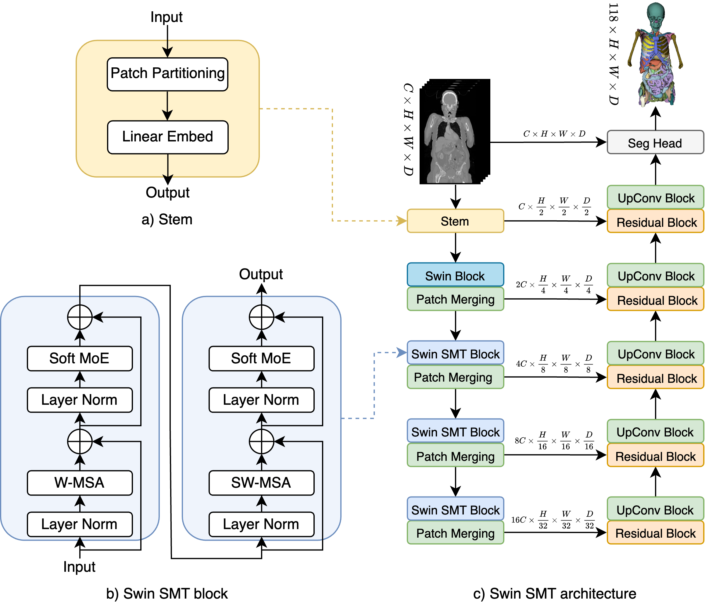

I am interested in machine learning, deep learning, computer vision in application to medical image analysis, especially medical image segmentation, medical vision-language models, multimodal learning.
We introduce Hierarchical Soft Mixture-of-Experts (HoME), a two-level token-routing layer for efficient long-context modeling, specifically designed for 3D medical image segmentation.
We introduce GEPAR3D, a novel approach that unifies instance detection and multi-class segmentation into a single step tailored to improve root segmentation from CBCT scans.
This work introduces a multi-stage pipeline for generating realistic synthetic data, featuring a fully-fledged surgical simulator that automatically produces all necessary annotations for modern CAS systems.
To enhance the visualization of placental vessels during surgery, we propose TTTSNet, a network architecture designed for real-time and accurate placental vessel segmentation.

Swin SMT: Global Sequential Modeling for Enhancing 3D Medical Image Segmentation Szymon Płotka,
Maciej Chrabaszcz,
Przemysław Biecek,
Medical Image Computing and Computer Assisted Intervention (MICCAI), 2024,
Spotlight Paper /
Code
We introduce Swin Soft Mixture Transformer (Swin SMT) to effectively handle complex and diverse long-range dependencies in 3D medical image segmentation.
We introduce a novel approach, DeCode, that utilizes label-derived features for model conditioning to support the decoder in the reconstruction process dynamically, aiming to enhance the efficiency of the training process.
We introduce TabAttention, a novel module that enhances the performance of Convolutional Neural Networks (CNNs) with an attention mechanism that is trained conditionally on tabular data.
{kind=link}